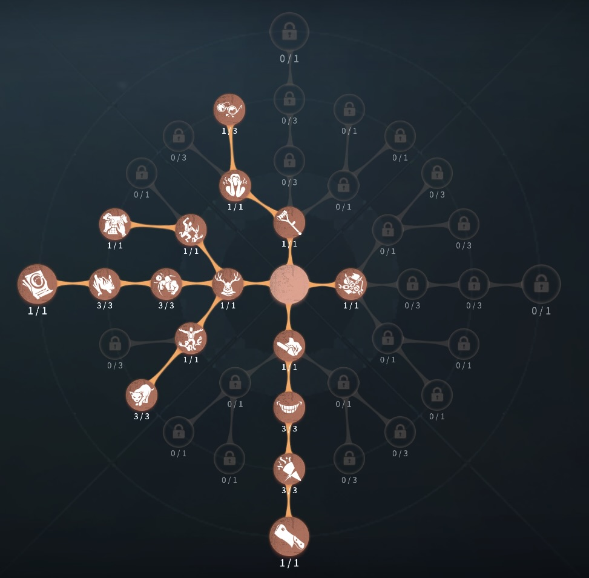
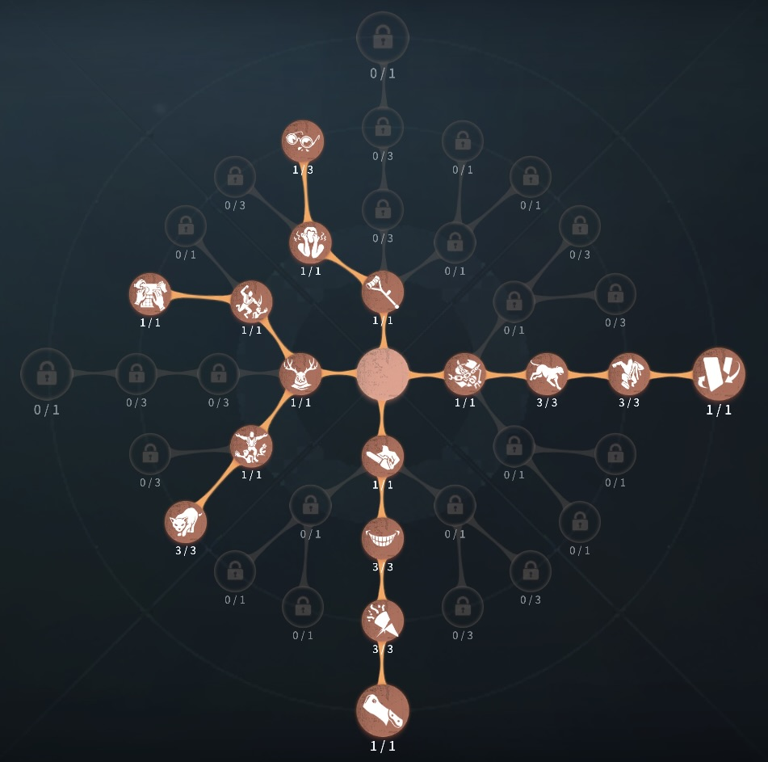

時空の影（アイヴィ）の評価
サバイバーはハンターを見れない！？
外在特質とスキル
特質1:古の面
・サバイバーがアイヴィの付近15m以内でアイヴィの顔を見ている時、侵蝕度が1秒ごとに4ずつ増加する。・侵蝕度
・侵蝕度が100に達すると、サバイバーは2.5秒間行動不可能になる。また、サバイバーは2.5秒アイヴィの方向へと緩やかに移動する。
・サバイバーがアイヴィの恐怖半径を離れてから3秒経過すると、侵蝕度は毎秒10の速度で低下していく。吊られているロケットチェア付近32ｍ範囲内では、侵蝕度の増加値が通常の0.5倍速度になる。
特質2:幻視
・イース人はアイビィに結合・分離することができる。アイヴィ、イース人の付近15メートル以内にいる時、サバイバーの視界範囲が縮小する。・イース人
・イース人の恐怖半径はアイヴィの半分であり、サバイバーの心音がならない。イース人は素早く移動でき、倒れた木の板や窓を通過することができる。通常攻撃や他の操作は行えない。
存在感0：意識転移、侵蝕の破片
・意識転移:・イース人を分離させ操作対象に切り替える。イース人が分裂状態の間は操作対象を自由に切り替えることができる。操作対象がアイヴィの時、イース人を回収（結合）できる。
・異族の正体
・アイヴィかサバイバーに憑依していないイース人の時使用可能。スキルを使用すると、短時間「古の面」を見せる。
・サバイバーに憑依状態のイース人の時使用可能。スキルを長押しすることで位置を選択し、サバイバーに短時間「古の面」を見せる。
・サバイバーが15メートル範囲内で「古の面」を見た場合、現在の行動が中断され、侵蝕度が40pt増加する。アイヴィとイース人は互いに異族の正体を使用可能で、クールタイムは個々にある。クールタイム：18秒
・精神の憑依
・イース人はサバイバーに憑依できる。憑依状態のイース人はサバイバーと共に移動し、そのサバイバーの輪郭を見ることができる。
・憑依されたサバイバーの傍に侵蝕の破片が1つ生成される。侵蝕の破片は生成されてから20秒間経過するとサバイバーは破壊することができる。破壊に必要な時間は5秒。サバイバーが一人脱落した後、侵蝕の破片の破壊不可時間が12秒、破壊必要時間が3秒になる。クールタイム：48秒
・侵蝕の破片
・侵蝕の破片は生成されてから150秒間存在し、9ｍ範囲内にいるサバイバーは侵蝕度が1秒ごとに9ずつ増加する。侵蝕の破片は5枚まで存在でき、上限を超えた場合は生成されたのが古い順に破壊される。
・空間転送
アイヴィは侵蝕の破片の位置まで瞬間移動することができる。侵蝕の破片の瞬間移動クールタイムは破片によって異なる。クールタイム：45秒。
存在感1：憑依の渇望
・各サバイバーの憑依クールタイムが38秒に減少する。存在感2：侵蝕転送
・アイヴィが空間転送によって瞬間移動をした先で、「古の面」を1回発動させる。侵蝕の破片の範囲内にいる全てサバイバーは侵蝕度が40pt増加する。クールタイム：43秒ハンターの立ち回り方
1. 初動の立ち回り
アイビィとイース人の両方で追い込んでいく
・索敵:
✅ イース人に切り替えてサバイバーを探す。発見したら「古の面」で侵蝕度を上げる。
・チェイス開始:
✅「古の面」で侵蝕度を上げた後、憑依してアイヴィに切り替える。アイヴィの瞬間移動で距離を詰め、チェイスを開始。強ポジ付近で憑依し、「侵蝕の破片」を設置できるタイミングを狙う。
・暗号機妨害:
✅追えそうにないサバイバーの場合、暗号機付近で憑依し「侵蝕の破片」を設置。これにより20秒間の遅延効果を発揮。
2. スキルの使い方
アイビィのスキルは古の面の制度で試合が決まる
・古の面:
・サバイバーのカメラの向きを確認し、正面から当てる。フライホイールを警戒し、不意打ちを狙う。
・憑依 & 侵蝕の破片:
・憑依で「侵蝕の破片」を設置し、暗号機妨害や強ポジ封じを行う。憑依後にアイヴィに切り替え、瞬間移動で攻撃を狙う。
・イース人とアイヴィの切り替え:
・アイヴィを歩かせながらイース人で索敵し、2ヶ所に圧をかける。操作設定を自分に合うよう調整し、切り替えをスムーズにする。
3. チェイス中の立ち回り
アイビィは浸食度の貯め方を気を付ける必要がある。
・侵蝕度を上げながら攻撃を狙う:
アイヴィとイース人の連携を意識し、スムーズな切り替えを行う。侵蝕度が100%になっても距離が離れていると攻撃できないため、位置調整が重要。
・粘着サバイバーへの対応:
「古の面」を使って不意打ちを狙い、移動を妨害。憑依して強ポジ周囲に「侵蝕の破片」を配置し、行動範囲を制限。
・距離チェ対策:
憑依で「侵蝕の破片」を設置し、粘着の妨害。「古の面」を使用し、オフェンスのタックルをキャンセル可能。
4. 救助狩りの立ち回り
フールズ・ゴールドは椅子前で簡単に攻撃をふらないことが大事
・救助狩りの前準備:
・吊ったサバイバーに憑依し、「侵蝕の破片」を設置。
侵蝕度の上昇を利用し、救助を遅延させる。
・救助狩り:
・中間待機しつつ、救助者を攻撃→瞬間移動で椅子前に戻る。存在感MAX時は「侵蝕の破片」と「古の面」を活用し、救助狩りを狙う。
・暗号機遅延:
・解読中のサバイバーに憑依し、「侵蝕の破片」を設置。これにより解読を20秒間妨害。
5. 注意点
フールズ・ゴールドを使う際には、以下の点に注意しましょう。
🔹 フライホイール対策
→ フライホイールを使われると侵蝕度がリセットされる。不意打ちで「古の面」を当て、対策を徹底。
🔹 通電後の立ち回り
→ ゲート付近にイース人を配置し、憑依で開門妨害。「古の面」＋憑依で侵蝕度を素早く溜め、脱落を狙う。
🔹 ケアレスミスの防止
→ 操作が複雑なため、イース人とアイヴィの動きを整理。操作設定を最適化し、スムーズなプレイを心がける。
おすすめの内在人格
傲慢型人格
この内在人格は、獲物を追うで切り替えを多いアイヴィの弱点を補い、幽閉の恐怖でゲート守りが強いアイヴィの強みを引き出した人格

裏向きカード型人格
この内在人格は、獲物を追うで切り替えを多いアイヴィの弱点を補い、幽閉の恐怖でゲート守りが強いアイヴィの強みを引き出した人格


みんなのコメント